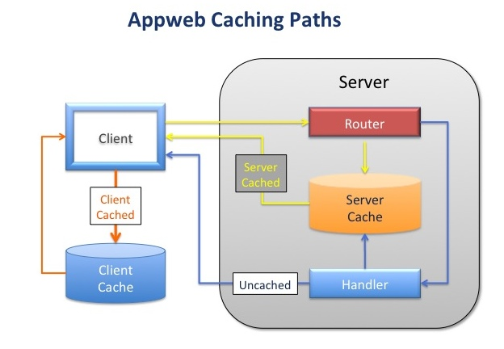

Quick Nav
- Web Server Interface
- Application Generator
- Web Page Parser
- MVC
- Models
- Views
- View Pipeline
- Controllers
- Routing
- Actions
- Developing
- Deployment
See Also
Response Caching
Response caching is an ideal technique for speeding up a wide variety of web applications. By caching frequently used pages, those pages can be served faster than the normal approach of generating the web page each and every time the user visits the page. However, caching can be a complex topic as there are several places to locate the cached content and many ways to configure the overal caching architecture. This document provides a basic overview of Appweb caching and its caching capabilities.
Why Cache?
A typical PHP web page that accesses a database may take a tenth of a second to serve

. Why caching
- Performance comparisons
- Issues
- CGI/PHP very slow page generation
- Many views > updates
- Slow network latency and transmission
- Level of Caching
- Client not cached, server not cached. Normal page generation.
Capture output for next request. If next request comes before
content expires, can use that.
- Client not cached, server cached. Client requests, servers has
fresh cached content. Sends content.
- Client cache and server cache. Client requests, server validates
and responds with not-modified
- Client cached data and cache configured to not ask server
(NOTE: can use client and server caching)
- Places to Cache
- Client side
- Pros and cons
- Server side
- Server side - no generation
- Server side - PLUS no transmission (if-modified)
- Better than client side in many cases
- Manual - test if content fresh in handler and render cache
or recompute. (Pro: ... have full control, Con: a bit slower)
- Event driven - build page on update event not on user view
- (pro - good if viewed much more than updated and must never
serve stale content)
- Pros and cons
- Server-Side Caching Paradigms
- Server-side pull-through caching
- Picture
- Client reloading
- Client If-Modified and etags
- Server-side event driven cache updates
. Modes of server caching
Overview
- Request parameters
- Caching Post requests
- Server combined
- Server unique
- Server only
- Server manual
- Client
. Directives
- Lifespans
- Synopsis
. LimitCache Memory
. API usage
- ESP manual caching
. Examples
Cache 86000
Cache client=86400 ext="gif,jpg,png,ico"
Cache server methods="GET"
Cache server methods="GET,POST" /status.esp /inventory.esp
Cache server methods="GET,POST" /status.esp /inventory.esp
Cache server only /user/login.esp?first=1
Cache server all /user/login.esp
Cache server unique /user/login.esp
Cache server manual /dashboard.esp
- Questions to ask
- Can I serve stale content. If yes, how stale. Use client-caching.
- How frequently is this content accessed. If frequent, consider server caching.
- Is the content updated more than viewed, then use pull-through
- If viewed more than much more than updated
- use event driven updates to generate page
- If views more than updated, but cost of checking in handler is acceptable
- then use manual cache updates in handler